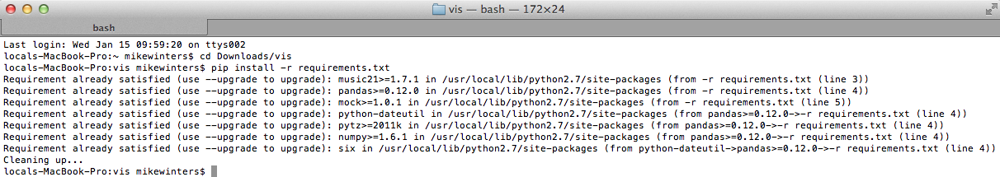
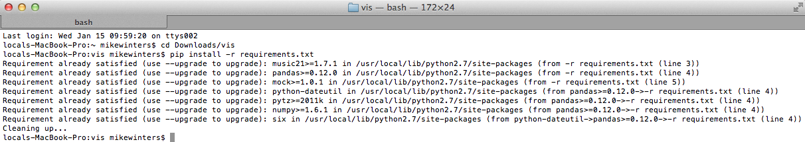
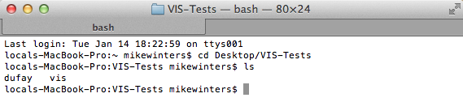
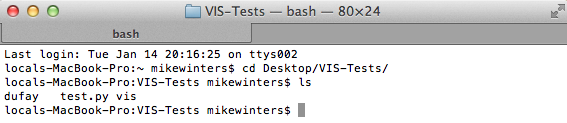
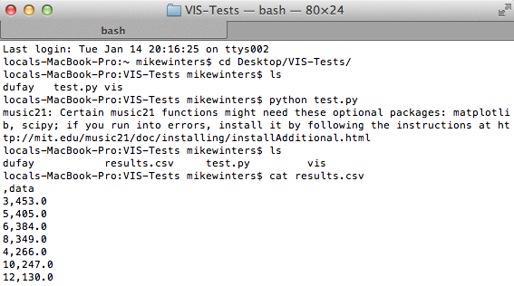

What is VIS?
VIS is the name of our python library for contrapuntal music analysis. It is running "behind the scenes" of our web application. The goal of the web application is to provide an accessible tool for music researchers, but you may have questions that our web application can't answer. In this case, the flexiblity offered by VIS may be right for you.
Though words like 'python library' may seem scary, if you have learned 'contrapuntal music analysis' than there is nothing to fear. This document will walk you through the steps to installing VIS and running your first bit of code. If you are a developer, you can get more information on the code by going straight to our documentation.
Installing VIS
Installing VIS is a two step process. First, you download the folder which includes all of our code (here), then you install the packages that our code needs to run. The first step is easy, but the second will require some familiarity with your consol/terminal window.
Installing required packages
This is the tricky step, and will require a little knowledge of your terminal/consol window. The following steps will work for MacOSX.
Open your terminal window

'cd' into your recently downloaded VIS folder

run 'pip install -r requirements'

'cd' into your recently downloaded VIS folder
run 'pip install -r requirements'
Pip is a tool for installing and managing python packages. Running 'pip install -r requirements' makes pip go and fetch the packages VIS needs to work, and puts them in a place that VIS can find them.
In the previous example, pip found that I already had all of the packages needed (e.g. music21, pandas, mock), so it did nothing. If this is your first time installing VIS, it may take a while for pip to download all of these packages. In this case, you will likely see a verbosity of activity, which after a minute or so will end with 'Cleaning up...'
Indeed, if this is your first time using pip, it may not be installed. You will have to do this first. Search google for 'how to install pip', and follow the instructions there.
You're done! VIS has been installed.
Example Code to Get You Started
Now that you have installed VIS, you can start to use it. Let's begin by downloading some pieces to do analysis on. For this example, I'm going to use three pieces by the composer Guillaume Dufay, an extremely influential Netherlandish composer active in the early renaissance. The three pieces I will use are:
- Alma redemptoris mater
- Anima mea liquefacta est
- Ave maris stella
To help you get started, I've put them in a .zip file on our site. You can download those files here. This music and more are available on our symbolic music database.
For this example, put the three pieces in a folder called "dufay," and put that folder in the same directory as VIS. I put both into a directory I called 'VIS-Tests':
Write some code
Now that everything is in the right place, we can write some code for contrapuntal analysis. This code is unique to VIS, and will count the number and quality of intervals in the three pieces. That code is written below, but for the sake of simplicity, you can download it here.
from vis.workflow import WorkflowManager
import os
cwd=os.getcwd()
fileDir=cwd+'/dufay/'
files=os.listdir(fileDir)
wm = WorkflowManager([fileDir+x for x in files])
wm.load('pieces')
wm.run('intervals')
wm.export('CSV','results')
That code should be saved into a file, and put into the same directory as VIS, but not in the VIS folder itself. For this example, I've saved my code as 'test.py' and put it into a folder called 'VIS-Tests' which contains the 'VIS' folder and the 'Dufay' folder which you just downloaded.
In MacOSX, python is built into Terminal, so to run the code I meerly type 'python test.py', and the results are saved into a file called results.csv in that directory. CSV is a commonly used data type, and can be easily read my many programs including Excel.
The results list all extracted intervals in order from most common to least common. The third is the most common with 453 occurrences. The 5th is the second most common with 405 occurrences, etc.
Congrats, you've written your first VIS code!
Getting more help
For much more detailed documentation, you can read the API documentation. There are a variety of settings you can choose from to do more advanced work (e.g. see how to extract intervals by quality). Contact us with any use questions, and we will give you an answer!